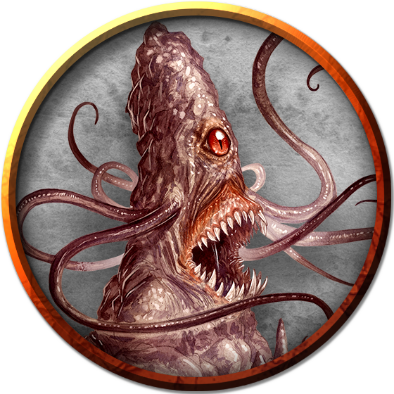

Roper
Living in caves and caverns throughout the Underdark, voracious ropers feast on whatever they can catch and seize. A roper eats any creature, from Underdark beasts to adventurers and their gear.
A roper has the appearance of a stalagmite or stalactite, which often allows it to attack with surprise. The creature can move slowly using thousands of sticky cilia beneath its base. It creeps up cave walls and along stone ceilings, finding the best position from which to attack.
Underdark Hunters. The roper is an evolved, mature form of piercer, with which it shares its rock-like appearance and hunting tactics. A roper can hold still for long hours, shutting its single eye to look like nothing more than a mundane formation of rock. Creatures that come too close are surprised when that eye snaps open and sticky tendrils shoot out to seize them. The roper then makes horrible guttural sounds as it reels in its struggling victims, drawing them close for the fatal bite of its stony teeth.
A roper can digest anything it eats with the exception of platinum, gemstones, and magic items, which can sometimes be retrieved from the creature's gizzard after death. A roper's digestive juices are also valuable, fetching a high price from alchemists who use them as a solvent.
Weakening Tendrils. A roper has six nubs set along its body, through which it extrudes sticky tendrils that bond to whatever they touch. Each tendril sends out hair-like growths that penetrate a creature's flesh and sap its strength, so the victim can struggle only weakly as the roper reels it in. If a tendril is cut through or broken, the roper produces a new one to replace it.
Environment
Mountain, Underdark
Token

Roper
Large monstrosity, neutral evil
- Armor Class 20 (natural armor)
- Hit Points 93 (11d10 + 33)
- Speed 10 ft., climb 10 ft.
STR DEX CON INT WIS CHA 18 (+4) 8 (-1) 17 (+3) 7 (-2) 16 (+3) 6 (-2)
- Proficiency Bonus +3
- Saving Throws
- Damage Vulnerabilities
- Damage Resistances
- Damage Immunities
- Condition Immunities
- Skills Perception +6,Stealth +5
- Senses darkvision 60 ft.,passive Perception 16
- Languages --
- Challenge 5
False Appearance. While the roper remains motionless, it is indistinguishable from a normal cave formation, such as a stalagmite.
Grasping Tendrils. The roper can have up to six tendrils at a time. Each tendril can be attacked (AC 20; 10 hit points; immunity to poison and psychic damage). Destroying a tendril deals no damage to the roper, which can extrude a replacement tendril on its next turn. A tendril can also be broken if a creature takes an action and succeeds on a DC 15 Strength check against it.
Spider Climb. The roper can climb difficult surfaces, including upside down on ceilings, without needing to make an ability check.
Actions
Multiattack. The roper makes four attacks with its tendrils, uses Reel, and makes one attack with its bite.
Bite. Melee Weapon Attack: +7 to hit, reach 5 ft., one target. Hit: 22 (4d8 + 4) piercing damage.
Tendril. Melee Weapon Attack: +7 to hit, reach 50 ft., one creature. Hit: The target is grappled (escape DC 15). Until the grapple ends, the target is restrained and has disadvantage on Strength checks and Strength saving throws, and the roper can't use the same tendril on another target.
Reel. The roper pulls each creature grappled by it up to 25 feet straight toward it.